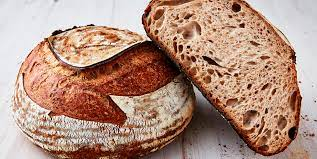

Sourdough Bread

Grandma's Rustic Sourdough Bread Recipe
My Grandmother would always make the best sourdough bread in the winters. She would make the starter by scratch over the course of a week.
This recipe follows her bread in the old world tradition. It uses freshly ground wheat berries for flour, and takes about a week to make.
Please enjoy this recipe.
Ingredients
- Wheat berries or whole wheat flour
- Salt
- Olive oil
- Homemade or store bought sourdough stater
Steps
- Make sourdough starter by mixing equal parts wheat flour and water into pancake like batter. Feed every day for a week by adding a spoonful of mixture
to new batch of flour/water mixture.
- Mix sourdough starter with specific proportions of wheat flour and water to make the levain.
- After letting the levain rise, use that to mix a larger batch of dough with even more flour and water, as well as olive oil.
- Knead the dough to achieve a good gluten consistency, and let the dough rest and rise.
- Bake in the oven at 450 degrees F.